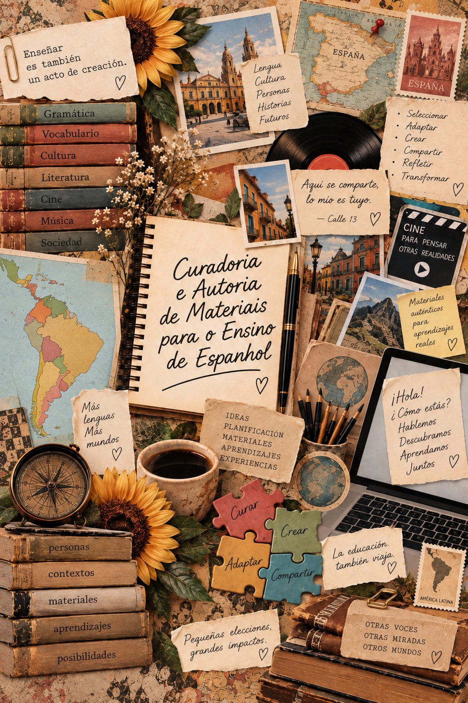
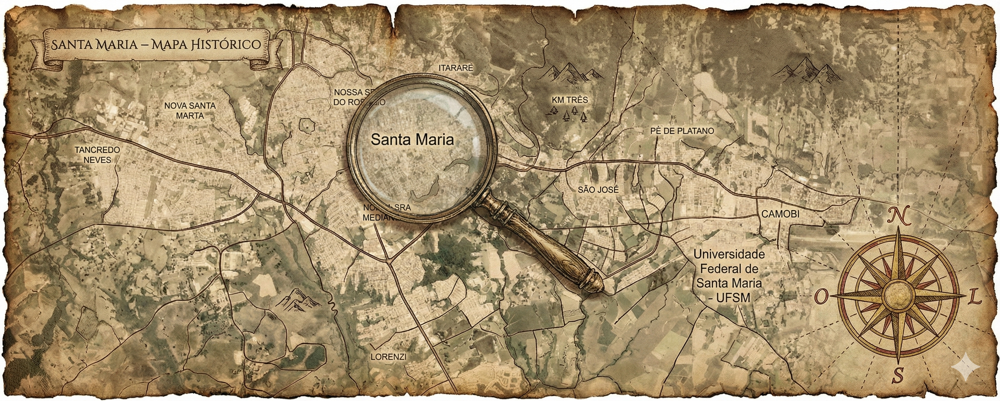
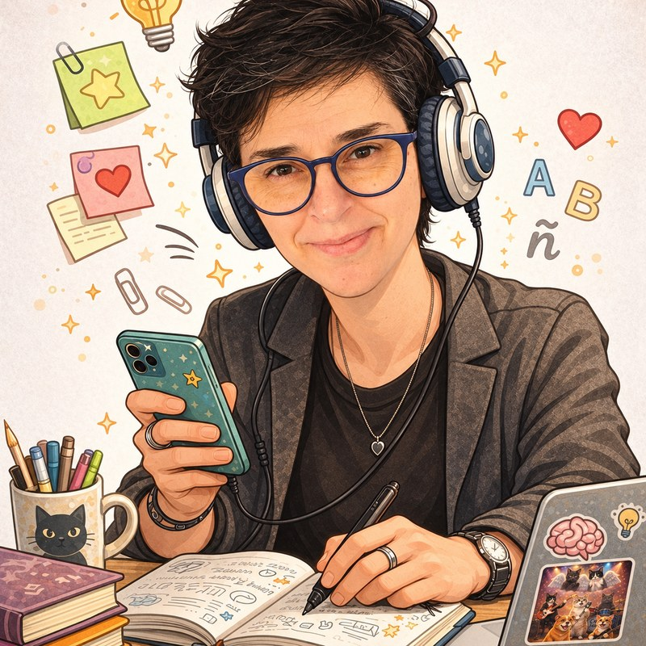

Curar, adaptar,
criar.
Um guia tutorial para consulta autônoma: apoios práticos para buscar, avaliar, adaptar e criar materiais de ensino com intencionalidade e autoria docente.
Elaborado como produto educacional da dissertação de mestrado de Sílvia Natércia Pedrozo Viana, sob orientação da professora Vanessa Ribas Fialho, no Programa de Pós-Graduação em Tecnologias Educacionais em Rede (PPGTER) da Universidade Federal de Santa Maria (UFSM).
Versão do guia para avaliação: explore os módulos no seu ritmo e escolha o percurso que faz sentido para sua prática. Depois, acesse o link de avaliação pelo item “Avaliação do guia” no menu ou pela seção correspondente, ao final desta página.

Pesquisa de mestrado · PPGTER/UFSM
A pesquisa
que fundamenta o guia
A dissertação que fundamenta este produto educacional poderá ser consultada após a defesa e a publicação pelo Programa de Pós-Graduação em Tecnologias Educacionais em Rede (PPGTER) da Universidade Federal de Santa Maria (UFSM). O acesso temporário pelo Drive também depende da disponibilização de um link autorizado.
Os botões serão ativados quando os links autorizados estiverem disponíveis.
Enquanto isso, conheça os resultados agregados do questionário diagnóstico.
Para quem ensina Espanhol
O material é um começo.
O contexto da turma dá o rumo.
Este guia foi pensado para professoras e professores de Espanhol da Rede Municipal de Ensino de Santa Maria. Ele parte das práticas, interesses e condições relatados por dez docentes no questionário diagnóstico da pesquisa.
As etapas são sugestões de trabalho, não uma receita nem uma sequência obrigatória. Você pode procurar, adaptar, criar, experimentar, compartilhar ou voltar a uma escolha anterior, conforme as necessidades da sua turma.
Explore o guia
Caminhos
para começar
Percorra os módulos para conhecer as ideias do guia ou vá direto a uma necessidade prática. Não é preciso ler tudo em sequência. Cada um dos cards abaixo é clicável e direciona diretamente ao conteúdo. Se preferir, siga a barra de rolagem e explore na sequência em que o guia foi elaborado pela pesquisadora.
Percurso de leitura
Conhecer os quatro módulos
Contexto da pesquisa, curadoria, autoria e ferramentas.
Consulta rápida
Encontrar um material
Comece pelo catálogo de fontes e pelos critérios de curadoria.
Consulta rápida
Adaptar ou criar um recurso
Acesse o roteiro de adaptação visual, impressão e revisão.
Consulta rápida
Considerar barreiras de acesso
Explore estratégias sem associar automaticamente barreiras a diagnósticos.
Território da pesquisa
Entrando no território
Santa Maria, no interior do Rio Grande do Sul, é o cenário em que esta pesquisa se desenvolve. O mapa situa geograficamente o estudo e convida a olhar para além dos limites da cidade: para os espaços escolares, as experiências docentes e os contextos em que se constroem escolhas pedagógicas.
A presença do Espanhol na Rede Municipal de Ensino de Santa Maria (RMSM) integra uma trajetória de mobilização pela valorização dessa língua na educação pública. Nesse percurso, destaca-se o Movimento #FicaEspanhol, que reuniu professores, estudantes e outros atores sociais em defesa da permanência da disciplina nos currículos escolares. No Rio Grande do Sul, essa mobilização contribuiu para a aprovação da Proposta de Emenda à Constituição (PEC) nº 270/2018, que resultou na Emenda Constitucional nº 74/2018, incluindo a oferta obrigatória do Espanhol, com matrícula facultativa, nas escolas públicas de ensino fundamental e médio.
Em Santa Maria, esse contexto de mobilização e mudanças normativas acompanhou a organização gradual da oferta da disciplina na rede municipal: em 2020, foi realizado concurso público para professores de Espanhol; em 2023, foram publicadas as Diretrizes Curriculares de Língua Espanhola; e, a partir de 2024, a disciplina passou a ser efetivamente implementada. Esse processo ocorreu em um cenário marcado pela ausência de um livro didático de Espanhol disponibilizado pelo Programa Nacional do Livro e do Material Didático (PNLD), condição que também motivou a investigação sobre como os docentes selecionam, adaptam e criam materiais para suas aulas.
Conhecer esse território é reconhecer que as práticas de ensino não acontecem de maneira isolada. Elas se constituem em relação às pessoas, aos recursos disponíveis e às condições de cada contexto. É a partir desse olhar situado que o guia propõe seus caminhos de curadoria e autoria docente.

Percurso do guia
Quatro módulos
para apoiar a prática
Explore o território para conhecer as ideias do guia ou vá direto para uma necessidade prática — não é preciso ler tudo em sequência.
Módulo 1
Da pesquisa à proposta
Contexto, desafios e necessidades indicadas na pesquisa.
Clique aqui para acessar o módulo
Módulo 2
Professor-curador — buscar e selecionar
Etapas, critérios de escolha e ações de curadoria.
Clique aqui para acessar o módulo
Módulo 3
Professor-autor — planejar e criar
Afetividade, intencionalidade e criação situada.
Clique aqui para acessar o módulo
Módulo 4
Caixa de ferramentas — recursos para a curadoria e autoria docentes
Clique em uma opção abaixo para acessar o conteúdo correspondente:
Módulo 1
O contexto orienta
Contexto da pesquisa · dados e proposta
O contexto orienta
as escolhas do guia
Neste módulo, os dados do questionário são colocados em diálogo com as decisões que orientam a proposta do guia.
Resultados em perspectiva
Os resultados gerados a partir da aplicação do questionário de pesquisa aos professores de Espanhol da RMSM orientaram a construção de um guia que reconhece as práticas já desenvolvidas pelos docentes, oferece critérios para qualificar escolhas e disponibiliza recursos para adaptar e criar materiais em diferentes condições de ensino. Os resultados são apresentados de forma agregada, sem identificação individual dos participantes. Os indicadores selecionados contextualizam a proposta do guia e não substituem a análise completa apresentada na dissertação. Veja, a seguir, alguns desses dados.
10/10
adaptavam materiais encontrados
6 participantes relataram adaptar frequentemente e 4, sempre.
9/10
consideravam a conexão com os estudantes
Assinalaram esse critério ao pensar na criação de materiais.
7/10
queriam aprofundar a curadoria e a seleção
Indicaram esse tema entre os assuntos de interesse formativo.
7/10
queriam explorar ferramentas de criação
Indicaram esse tema entre os assuntos de interesse formativo.
7/10
queriam aprofundar adaptação e edição
Indicaram esse tema entre os assuntos de interesse formativo.
7/10
assinalaram infraestrutura como desafio
As condições de acesso e os recursos disponíveis precisam entrar no planejamento.
6/10
assinalaram falta de tempo como desafio
Consultas rápidas e recursos reutilizáveis podem apoiar diferentes rotinas.
5/10
buscavam materiais frequentemente
Outros 4 participantes relataram fazer essa busca sempre.
4/10
buscavam materiais sempre
Somados aos que buscavam frequentemente, são 9 participantes.
Fonte: questionário diagnóstico da pesquisa, 2026. A amostra é de dez participantes e não permite generalizar os resultados para toda a rede.
A proposta do guia responde, portanto, às práticas e aos desafios relatados pelos dez professores respondentes do questionário. É importante lembrar que as respostas dadas pelo grupo não refletem uma generalização para toda a rede.
Por que confeccionar este guia?
Para organizar apoios práticos a ações de curadoria e autoria que já aparecem no cotidiano docente.
Para considerar desafios como infraestrutura, tempo e diferentes condições de acesso.
Para oferecer ideias que possam ser contextualizadas, revistas e partilhadas.
O que o guia se propõe a apoiar
- Curadoria: localizar e avaliar materiais em função do objetivo e da turma.
- Autoria: reconhecer as escolhas docentes envolvidas ao adaptar ou criar.
- Viabilidade: prever acesso, infraestrutura e alternativas de uso.
- Reflexão: observar a experiência e reconfigurar a proposta.
Módulo 2
Professor-curador · procurar · selecionar · registrar
Professor-curador — buscar, selecionar e contextualizar
Curar materiais envolve decisões: localizar fontes, avaliar possibilidades, relacionar recursos a objetivos e considerar como serão usados com uma turma concreta.
Preliminar
Pesquisar, selecionar e organizar recursos que possam apoiar o objetivo de ensino.
Significativa
Relacionar, remixar e contextualizar o que foi encontrado, transformando o material para a situação pedagógica.
Consolidada
Partilhar, dialogar e acompanhar a circulação do recurso em novos contextos e interações.
Esta síntese do guia dialoga com a discussão sobre práticas de curadoria digital de materiais de ensino (Bassani e Magnus, 2021; Costa et al., 2023). O percurso é recursivo: etapas e ações podem se cruzar conforme a necessidade, sem constituir uma escala para classificar docentes.
Ações de curadoria na prática
- Defina a busca. Escreva o objetivo e os termos que podem levar a um recurso pertinente.
- Localize a origem. Registre autoria, instituição ou página de onde o material veio.
- Leia criticamente. Observe a adequação linguística, cultural e pedagógica para esta turma.
- Confira o uso. Verifique licença, créditos e condições para copiar, editar ou compartilhar.
- Planeje o acesso. Pense em como a turma usará o material com os recursos realmente disponíveis.
Aplicação guiada
Decida o que fazer com um recurso
Escolha um material que você já usa ou acabou de encontrar. O objetivo é produzir uma decisão justificada — usar, adaptar, combinar com outro recurso ou continuar a busca.
- Descreva o destino. Anote a turma, o objetivo e as condições de acesso.
- Registre a origem. Guarde autoria ou instituição, endereço e, quando disponível, data e licença de uso.
- Examine o conteúdo. Confira língua, contexto cultural, adequação ao objetivo e necessidade de apoio.
- Justifique a decisão. Indique o que atende, o que falta e que mudança seria necessária.
Registro produzido: uma ficha breve com a fonte, a decisão tomada e o motivo. Se os direitos de edição ou redistribuição não estiverem claros, confirme as condições antes de modificar ou compartilhar o material.
Ferramenta de consulta · Deschaine e Sharma (2015)
Os 5Cs em perguntas práticas
Use estas perguntas como apoio para organizar uma busca e justificar escolhas. Os 5Cs não substituem a leitura crítica nem formam uma sequência obrigatória.
Que recurso encontrei e onde vou guardar o endereço e os dados da fonte?
Como organizo este recurso por tema, objetivo, língua, turma ou formato?
Quem produziu o material? É confiável, pertinente, acessível e permitido para este uso?
Que relação o recurso estabelece com o objetivo, os conhecimentos e o contexto da turma?
Como posso compartilhar minha seleção ou adaptação, respeitando autoria, licença e contexto?
Ver um exemplo completo de decisão de curadoria
Exemplo didático hipotético, elaborado para demonstrar o processo; não descreve uma resposta do questionário nem um recurso real específico.
- Coletar — localizar: procure, em um portal institucional, um texto curto em espanhol sobre uma celebração cultural. Registre o endereço, a autoria e a data de consulta.
- Categorizar — organizar: registre o tema, a língua, a extensão, o formato e a turma para a qual o recurso pode ser pertinente.
- Criticar — verificar: confira a fonte, a atualidade, as representações culturais, a linguagem, a legibilidade e as condições de uso. Se identificar uma barreira de acesso ou uma licença incompatível, considere buscar outra fonte.
- Conceitualizar — relacionar: defina o objetivo da leitura e identifique os conhecimentos prévios necessários. Se for pertinente, acrescente um glossário breve e perguntas que ajudem a comparar informações do texto.
- Circular — compartilhar: se os termos autorizarem, prepare uma versão adaptada, identifique o texto original e descreva as mudanças. Se a permissão não estiver clara, compartilhe apenas a referência ou o link para a fonte.
Decisão possível: use o texto com apoio de vocabulário e contextualização, após confirmar a fonte, a adequação à turma e as condições de reutilização.
Ações práticas
Contextualizar · transformar · creditar
Adaptar com critério
Nas respostas ao questionário, adaptar aparece como prática recorrente. Estas ações ajudam a relacionar a transformação do recurso às necessidades da turma, sem perder de vista sua origem e suas condições de uso.
Escolha o que precisa mudar
O que deve permanecer para atender ao objetivo? O que precisa de contextualização, apoio, outra linguagem ou outro formato?
Prepare mais de uma via
Considere versão impressa, leitura em voz alta, projeção ou uso digital conforme o que a escola e a turma podem acessar.
Mantenha a origem visível
Guarde o endereço ou a referência do material e respeite as condições de uso antes de reproduzir, modificar ou redistribuir.
Projete diferentes acessos
Considere texto legível, descrição de imagens, transcrição de áudio, legendas em vídeo e uma alternativa que não dependa de conexão contínua.
Passo a passo
Registre a transformação
Uma adaptação pode ser pequena. Tornar visíveis a intenção, a mudança e a condição de uso ajuda a revisar o material depois.
- Guarde a referência do original. Anote a fonte e as condições de uso.
- Marque o que permanece e o que muda. Relacione cada mudança ao objetivo e ao grupo.
- Prepare o formato de acesso. Inclua uma alternativa caso a ferramenta, a internet ou o equipamento não estejam disponíveis.
- Revise e atribua crédito. Confira clareza, acessibilidade e indicação da origem antes de usar ou compartilhar.
Antes de adaptar: se a licença ou a autorização não permitir claramente a alteração ou redistribuição, não presuma que o material está liberado; procure os termos de uso ou uma fonte com condições compatíveis.
Uma adaptação pode ser pequena.
Acrescentar uma pergunta, contextualizar uma imagem, reorganizar uma
tarefa ou preparar uma alternativa de acesso também são decisões
autorais. Registre o que mudou e por quê.
Módulo 3
Professor-autor · planejar · criar · experimentar
Professor-autor — planejar, criar e experimentar
A autoria docente envolve escolhas sobre o que ensinar, para quem e como criar condições para que os estudantes se reconheçam e participem da proposta.
A autoria docente também se constrói na relação com os estudantes. Suas perguntas, interesses, interpretações e formas de participação ajudam o professor a observar como a proposta funciona. Com base nessa observação, ele pode rever instruções, recursos ou formas de participação e reconfigurar a proposta para aquele contexto, preservando sua intencionalidade pedagógica.
Estes exemplos são propostas pedagógicas do guia, não resultados atribuídos aos participantes. A interpretação da pesquisa mobiliza afetividade, intencionalidade pedagógica, criticidade e fluência tecnológico-pedagógica como saberes estruturantes da autoria docente (Alves, 2023).
1Planejarobjetivo e turma
2Criar ou adaptarrecurso e acesso
3Experimentarna situação real
4Observarrespostas e limites
5Reconfigurarpara a próxima vez
Representação didática do guia, em diálogo com a concepção recursiva de produção de materiais discutida por Leffa (2008), não reprodução literal de um modelo do autor. Indica possibilidades de retorno e mudança, não uma sequência fixa.
Depois da aula
Observe o encontro entre material e turma
- O que os estudantes fizeram, disseram ou perguntaram?
- Que parte da proposta favoreceu a participação?
- Que condição dificultou o uso do material?
- O que você manteria ou mudaria para outro grupo?
03 · Para levar à prática
Rascunhe sua
próxima proposta
Use este roteiro como apoio ao planejamento. Os campos ficam apenas nesta página: nada é enviado ou armazenado por este guia.
Meu mapa de criação
Ao fechar a janela de impressão, inclusive se ela for cancelada, os campos serão apagados desta página. O guia não envia nem salva os campos.
Exemplo preenchido
Exemplo hipotético para mostrar um nível possível de registro; adapte as respostas ao contexto e à turma.
- Objetivo
- Localizar informações explícitas em um texto curto em Espanhol.
- Barreira considerada
- Instruções extensas podem dificultar saber por onde começar.
- Acesso
- Disponibilizar o texto em tela e em cópia impressa, com instruções numeradas.
- Evidência
- Observar se a turma localiza as informações indicadas e consegue explicar como as encontrou.
- Próxima decisão
- Manter as etapas numeradas; verificar se o glossário é necessário para outro grupo.
Módulo 4
Caixa de ferramentas — recursos para a curadoria e autoria docentes
Sugestões práticas para apoiar a busca, a avaliação, a adaptação e a organização de materiais. Escolha ferramentas conforme as condições de acesso da escola e as regras institucionais.
01 · Catálogo comentado
Fontes para explorar
Os serviços abaixo têm propósitos diferentes e oferecem caminhos para explorar materiais e propostas para o ensino de Espanhol.
- ProfeDeELE: propostas e materiais para o ensino de Espanhol como língua estrangeira. Acessar ProfeDeELE.
- ELO — Ensino de Línguas Online: ambiente para explorar atividades de línguas e possibilidades de autoria. Acessar ELO.
- Centro Virtual Cervantes: portal cultural e linguístico com textos, conteúdos e seções temáticas em espanhol. Acessar Centro Virtual Cervantes.
- eduCAPES: repositório institucional de materiais e objetos educacionais. Acessar eduCAPES.
Ao selecionar um item: confira autoria, data, fonte, adequação linguística e cultural, acessibilidade e licença. Repositório ou portal público não significa que todos os materiais possam ser copiados ou adaptados.
Ficha breve de curadoria — modelo e referência
Esta ficha é um modelo de apoio: você pode preenchê-la para registrar a análise de um material e/ou usá-la como referência para elaborar um registro próprio, com campos adequados ao seu contexto. Não é necessário seguir um formato fixo; mantenha as informações que ajudem a justificar sua decisão e a retomar as condições de uso.
- Recurso, endereço e data de consulta.
- Autoria, instituição responsável e licença ou condição de uso.
- Objetivo de aprendizagem, turma e contexto de uso.
- Adequação linguística e cultural, acessibilidade e condições de acesso.
- Decisão: usar, adaptar, combinar ou continuar a busca — e por quê.
- Alterações feitas, crédito preservado e pontos a rever após a aplicação.
Use a impressão do navegador para guardar esta ficha junto ao Mapa de Criação. Se a licença não estiver clara, não presuma autorização para editar ou redistribuir.
02 · Modelo reutilizável
Organizar uma biblioteca compartilhada
O que você vai fazer: preparar uma estrutura simples para localizar materiais e registrar sua origem. Use apenas o armazenamento aprovado pela rede ou pela escola.
Estrutura inicial de pastas:
Espanhol/
etapa-ou-turma/
tema/
materiais-originais/
versoes-adaptadas/
fichas-de-curadoria/
- Crie categorias que façam sentido para a equipe e evite pastas com nomes ou dados de estudantes.
- Use nomes consistentes, por exemplo:
tema_turma_formato_versao_data. - Guarde uma ficha com fonte, autoria, licença, objetivo, adaptações e data de conferência.
- Defina quem pode visualizar, editar ou compartilhar; teste a permissão com uma conta autorizada.
- Guarde uma alternativa local ou imprimível quando a conexão não for garantida.
Verificação: outra pessoa da equipe consegue localizar o material e compreender suas condições de uso? Não armazene dados pessoais de estudantes sem base legal, autorização e proteção adequadas.
03 · Adaptações e criação de materiais
Cinco tutoriais para criar com intencionalidade
Os cinco tutoriais apresentam possibilidades de adaptação e criação de materiais para o ensino de Espanhol. O primeiro propõe a reorganização de uma atividade de leitura, considerando a clareza das instruções e as condições de acesso. Os demais exploram uma mesma situação comunicativa — pedir e dar informações para se orientar na cidade —, com um objetivo comum de compreensão e produção de enunciados em Espanhol. Cada ferramenta oferece diferentes possibilidades de trabalho: narrar e contextualizar, relacionar e experimentar, decidir e justificar, explorar e investigar. As propostas são sugestões que podem ser adaptadas aos objetivos de aprendizagem, às características das turmas e às condições de ensino.
03A · Canva · Reorganizar e facilitar
Reorganizar uma atividade de leitura
O que você vai aprender: tornar instruções e informações de uma atividade mais claras sem mudar seu objetivo de aprendizagem.
Do que precisa: uma cópia de um material que você tenha autorização para editar, o objetivo da aula e acesso ao editor escolhido. Os nomes e a localização de comandos podem variar conforme a versão da ferramenta.
- Registre a fonte e confirme as condições de edição antes de importar o material.
- Identifique a instrução principal, as etapas necessárias e as palavras que podem dificultar a compreensão.
- Organize a página com título, instruções curtas e numeradas, espaço suficiente para responder e exemplos quando forem úteis.
- Use contraste, alinhamento e fontes legíveis; não transmita instruções somente por cor ou por imagem.
- Inclua glossário ou apoio linguístico apenas quando servir ao objetivo e ao grupo; mantenha a origem e registre suas mudanças.
- Exporte ou prepare uma alternativa em papel se a conexão, o equipamento ou o formato digital forem uma barreira.
Como verificar: peça a alguém que não viu o processo para localizar a tarefa e explicar o que deve fazer; revise a legibilidade em tela pequena e em impressão, o contraste e os créditos.
O que levar: uma versão reorganizada e uma ficha breve com objetivo, fonte, condições de uso e alterações. Os passos descrevem princípios estáveis, não botões específicos de uma interface que pode mudar.
Comparar uma versão para tela e uma versão imprimível
Antes de exportar, verifique se o texto permanece selecionável e legível, se nenhuma informação depende de animação ou internet e se há margem e espaço para responder no papel. Abra o arquivo exportado para conferir acentuação, imagens, quebras de página e leitura em escala real.
03B · Canva · Narrar e contextualizar
Transformar um conteúdo em história em quadrinhos
O que você vai fazer: criar uma história em quadrinhos (HQ) para contextualizar expressões usadas ao pedir e dar informações sobre trajetos em Espanhol.
Do que precisa: objetivo de aprendizagem, roteiro breve, imagens próprias ou com uso permitido e acesso ao Canva.
- Defina a situação comunicativa: uma pessoa procura a biblioteca e outra explica como chegar até lá.
- Planeje de quatro a seis quadros, com uma situação inicial, um diálogo e um desfecho.
- Crie os diálogos com expressões como ¿Dónde está la biblioteca?, Sigue todo recto, Gira a la derecha e Está al lado del parque.
- No Canva, escolha um modelo de HQ ou uma página em branco. Organize personagens, cenários e balões com uma sequência de leitura clara.
- Convide os estudantes a criar um novo diálogo, alterar o destino ou acrescentar uma orientação ao percurso.
- Revise o Espanhol, a legibilidade, os créditos e as condições de acesso. Prepare uma versão imprimível quando necessário.
Como verificar: observe se os estudantes compreendem as orientações da HQ e conseguem usá-las para criar um diálogo ou explicar um trajeto.
O que levar: uma HQ contextualizada, que possa ser reutilizada, adaptada e ampliada com novas situações comunicativas.
Pergunta-guia: a narrativa ajuda a compreender o uso das expressões ou apenas apresenta o conteúdo em outro formato?
Acessar modelos de histórias em quadrinhos no Canva.
O Canva disponibiliza modelos de quadrinhos editáveis, com diferentes quantidades de painéis. Confira as condições de acesso e uso dos recursos escolhidos.
03C · Wordwall · Relacionar e experimentar
Relacionar perguntas e orientações sobre trajetos
O que você vai fazer: criar uma atividade de associação entre perguntas e respostas usadas para solicitar e oferecer informações sobre lugares da cidade.
Do que precisa: objetivo de aprendizagem, enunciados em Espanhol e acesso ao Wordwall.
- Retome expressões da HQ ou de outra atividade já trabalhada com a turma.
- Prepare pares de perguntas e respostas, como ¿Dónde está la biblioteca? e Está al lado del parque.
- No Wordwall, explore um modelo de associação compatível com os enunciados selecionados.
- Insira os pares e confira se as respostas são coerentes com as situações apresentadas.
- Experimente a atividade antes da aula: verifique a clareza das instruções, o funcionamento e as possibilidades de acesso.
- Depois das associações, convide os estudantes a justificar as escolhas e elaborar novos enunciados.
Como verificar: observe se os estudantes relacionam as expressões adequadamente e explicam por que uma resposta corresponde à pergunta.
O que levar: uma atividade interativa que possa ser revista, reutilizada ou adaptada para outros conteúdos linguísticos.
Pergunta-guia: a atividade favorece a compreensão das situações comunicativas ou se limita ao reconhecimento de respostas?
Alternativa de acesso: quando disponível no modelo e no plano utilizado, prepare uma versão imprimível ou organize os pares em cartões de papel.
O Wordwall permite criar atividades a partir de modelos. A disponibilidade de modelos e de versões imprimíveis pode variar conforme o plano; confira as condições atuais.
03D · Kahoot! · Decidir e justificar
Escolher e justificar orientações em Espanhol
O que você vai fazer: elaborar um questionário interativo com situações comunicativas sobre localização de lugares e indicação de trajetos.
Do que precisa: objetivo de aprendizagem, situações contextualizadas, alternativas de resposta e acesso ao Kahoot!.
- Defina se o questionário será usado para retomar conhecimentos, identificar dúvidas ou discutir possibilidades de resposta.
- Crie situações com pequenos diálogos, mapas simples ou descrições de trajetos.
- Elabore alternativas linguisticamente plausíveis, com diferenças relevantes para cada contexto.
- No Kahoot!, insira as questões, revise os enunciados e ajuste as opções disponíveis no plano utilizado.
- Após cada resposta, convide a turma a explicar suas escolhas e trate os equívocos como oportunidades de revisão.
- Proponha que os estudantes formulem uma nova pergunta ou criem outra situação comunicativa.
Exemplo de questão
Según las indicaciones, ¿cuál es la orientación correcta para llegar a la biblioteca?
- Está a la derecha, después de la segunda esquina.
- Está a la izquierda, después de la segunda esquina.
- Está a la derecha, antes de llegar a la segunda esquina.
- Está a la izquierda, antes de llegar a la segunda esquina.
Resposta prevista: a primeira alternativa, conforme o trajeto descrito.
Como verificar: observe se os estudantes justificam as escolhas e usam as expressões em situações diferentes das apresentadas no questionário.
O que levar: um conjunto de questões para retomar o conteúdo e orientar decisões sobre o que precisa ser revisto ou aprofundado.
Pergunta-guia: o questionário oferece oportunidades de reflexão ou valoriza apenas a rapidez das respostas?
Alternativa de acesso: apresente as questões por projeção, leitura oral ou impressão, permitindo respostas individuais ou coletivas sem exigir dispositivos pessoais.
Acessar o Kahoot! para escolas.
As funcionalidades disponíveis podem variar entre os planos. Confira as condições atuais e planeje uma alternativa que não dependa de dispositivos pessoais.
03E · Genially · Explorar e investigar
Criar um mapa interativo para explorar trajetos
O que você vai fazer: transformar um mapa simples de uma cidade em um recurso interativo, com pontos clicáveis que apresentam informações e orientações em Espanhol.
Do que precisa: objetivo de aprendizagem, mapa esquemático próprio ou com uso permitido, pequenos textos em Espanhol e acesso ao Genially.
- Escolha lugares da cidade, como biblioteca, escola, parque e museu; defina o ponto de partida e o destino.
- Organize ruas e lugares com clareza. O mapa pode representar uma cidade fictícia criada para a atividade.
- No Genially, explore a categoria “Imagem interativa” e importe o mapa preparado.
- Adicione botões ou marcadores junto aos lugares. Configure cada um para apresentar uma informação, pergunta ou orientação.
- Proponha um desafio, por exemplo: Estás en la escuela. Sigue todo recto y gira a la izquierda. ¿Adónde llegas?
- Visualize o material antes de compartilhar. Teste os pontos, revise as instruções e confira o acesso em diferentes dispositivos.
Como verificar: observe se os estudantes interpretam as orientações, localizam os lugares e produzem enunciados para explicar outros trajetos.
O que levar: um mapa interativo que possa ser reutilizado, revisado e ampliado com novos lugares, perguntas e situações comunicativas.
Pergunta-guia: os pontos clicáveis ajudam a compreender e usar as orientações em Espanhol ou apenas acrescentam efeitos visuais?
Alternativa de acesso: prepare uma versão estática do mapa com pistas numeradas em texto ou em cartões impressos, para que a proposta não dependa da conexão.
Antes de compartilhar: confira a origem e as condições de uso das imagens, a legibilidade dos textos, a identificação dos pontos e as possibilidades de acesso.
Exemplo de pistas para os pontos
- Escuela
- Biblioteca
- Parque
Exemplo de interação para o ponto Escuela: Estás delante de la escuela. ¿Cómo puedes preguntar dónde está la biblioteca?
No mapa, os marcadores podem abrir janelas com informações desse tipo. Comece com um mapa e três pontos: importe a imagem, adicione um marcador, configure uma janela de texto, teste a interação e então repita o processo.
Como começar: a proposta não precisa virar um jogo completo; basta que a interatividade convide os estudantes a explorar informações e tomar decisões.
Acessar a criação de imagens interativas no Genially.
A criação de imagens interativas e a exportação para alguns formatos, inclusive HTML para uso offline, podem depender do plano. Confira as condições atuais; mantenha a alternativa estática ou impressa quando necessário.
04 · Biblioteca de prompts · IA
Solicitar apoio sem delegar a decisão docente
Como usar: substitua os campos entre colchetes por informações gerais, sem identificar estudantes. Solicite alternativas e critérios de revisão, não um diagnóstico nem uma decisão automática.
Planejar uma atividade
“Sugira duas atividades de Espanhol para praticar [objetivo linguístico] com uma turma de [etapa]. Para cada uma, indique objetivo, materiais, etapas e uma alternativa sem internet. Não invente referências; destaque o que o professor precisa verificar.”
Adaptar considerando uma barreira
“Considere esta barreira de acesso ou participação: [descreva a barreira observada, sem identificar pessoas]. Proponha até três alternativas para a atividade de Espanhol abaixo, preservando [objetivo]. Explique o que muda, o que permanece e como verificar se a alternativa funciona. Não associe a barreira a um diagnóstico nem inclua informação não fornecida. Material autorizado: [trecho].”
Revisar o Espanhol e o contexto cultural
“Revise o texto abaixo quanto a clareza e uso do Espanhol para [contexto]. Separe correções necessárias de variações possíveis, não trate uma variedade linguística como erro por si só e indique dúvidas que precisam ser conferidas em fonte confiável. Texto autorizado: [trecho].”
Converter uma proposta digital em alternativa imprimível
“Adapte a atividade abaixo para uma versão que possa ser feita em papel, mantendo [objetivo]. Indique materiais, instruções, espaço de resposta e elementos que dependem de áudio, vídeo ou internet; proponha alternativas e sinalize limites. Não invente fontes. Atividade autorizada: [descrição].”
Revisão necessária: compare a resposta com fontes confiáveis, confira língua, fatos, representações culturais, direitos e adequação pedagógica. Sistemas de IA podem errar, reproduzir vieses ou produzir conteúdo de origem incerta. Não insira dados pessoais, confidenciais ou identificáveis de estudantes.
Acessibilidade e participação
Comece pela barreira, não pelo diagnóstico
As opções abaixo são pontos de partida, não adaptações universais. Converse com o estudante e, quando necessário, com profissionais que acompanham seu processo. A inclusão deste percurso é uma decisão pedagógica de desenvolvimento do produto.
Exemplo didático hipotético · atividade de leitura em Espanhol
Antes: um único bloco de instruções extensas, texto em corpo pequeno e resposta solicitada apenas por escrito na plataforma.
Possível revisão: dividir a instrução em etapas numeradas, oferecer glossário quando pertinente, verificar legibilidade, permitir consulta ao texto impresso ou digital e prever uma forma alternativa de resposta quando compatível com o objetivo.
O exemplo é uma proposta do guia, não uma adaptação testada com uma turma nem uma recomendação vinculada a um diagnóstico.
Acessibilidade orienta a identificação e a remoção de barreiras. O Desenho Universal para a Aprendizagem (DUA) é uma abordagem de planejamento que amplia as possibilidades de acesso e participação desde o início. Já o Atendimento Educacional Especializado (AEE) é um serviço específico, complementar ou suplementar à escolarização nos termos da legislação brasileira. São conceitos relacionados, mas não sinônimos. Estas orientações dialogam com princípios do DUA e consideram a articulação com o AEE, mas não substituem a atuação de pedagogos e profissionais da Educação Especial. Busque atendimento especializado e/ou apoio da equipe multidisciplinar da escola ou da rede. Para questões pedagógicas, de conteúdo e nivelamento, dialogue com profissionais da área da Pedagogia; para adaptações e adequações, procure os profissionais da Educação Especial e articule as decisões com o AEE.
Formação continuada · Para ir além
Ampliar repertórios, explorar possibilidades
Um espaço para conhecer propostas formativas e produções acadêmicas que podem contribuir para o aprofundamento da fluência tecnológico-pedagógica, da curadoria e da autoria docentes.
A formação docente é um percurso contínuo, construído a partir de experiências, interesses e necessidades que se transformam ao longo da trajetória profissional.
Para ampliar suas possibilidades de aprendizagem, apresentamos dois espaços institucionais da Universidade Federal de Santa Maria (UFSM). O primeiro reúne os MOOCs (Massive Open Online Courses), cursos on-line, abertos e voltados a um público amplo, que permitem explorar diferentes temas e aprofundar conhecimentos.
O segundo disponibiliza acesso às dissertações e aos produtos educacionais desenvolvidos no Programa de Pós-Graduação em Tecnologias Educacionais em Rede (PPGTER). São materiais e recursos produzidos no contexto de pesquisas acadêmicas, com propostas que podem apoiar práticas de ensino, aprendizagem e formação.
Não há um percurso único ou uma seleção obrigatória: explore os acervos e escolha o que faz sentido para seus objetivos, seu contexto e seu momento formativo.
01 · Formação continuada
MOOCs da UFSM
Explore os cursos on-line, abertos e massivos disponibilizados pela Universidade Federal de Santa Maria. Conheça diferentes temáticas e propostas formativas e identifique aquelas que dialogam com seus interesses, suas necessidades e seus objetivos profissionais.
Para refletir: que conhecimentos ou experiências você gostaria de aprofundar neste momento da sua trajetória docente?
Acessar o catálogo de MOOCs da UFSM02 · Produção acadêmica
Dissertações e Produtos Educacionais do PPGTER
Conheça as dissertações e os Produtos Educacionais desenvolvidos no Programa de Pós-Graduação em Tecnologias Educacionais em Rede da UFSM (PPGTER). Explore diferentes propostas, recursos e experiências e considere quais podem contribuir para suas práticas, estudos ou projetos.
Para refletir: que ideias ou possibilidades você pode conhecer, adaptar ou investigar a partir dessas produções?
Acessar o repositório do PPGTERAvaliação do guia
Ajude a aprimorar
este material
Sua experiência pode ajudar a aperfeiçoar este guia.
Depois de explorar os módulos e experimentar os recursos que fizerem sentido para sua prática, convidamos você a compartilhar percepções sobre a clareza dos conteúdos, a navegação, os tutoriais e as possibilidades de aplicação.
O formulário será aberto em uma nova aba, para que você possa continuar consultando o material enquanto responde.
Licença de uso
Compartilhar e adaptar,
com atribuição e cuidado
O conteúdo original deste guia, de autoria de Sílvia Natércia Pedrozo Viana, está licenciado sob a Creative Commons Atribuição–NãoComercial–CompartilhaIgual 4.0 Internacional (CC BY-NC-SA 4.0). Você pode compartilhar e adaptar esse conteúdo para fins não comerciais, desde que atribua os créditos, indique alterações e distribua adaptações sob a mesma licença.
CC BY-NC-SA 4.0 Creative Commons Atribuição–NãoComercial–CompartilhaIgual 4.0 Internacional
A licença cobre apenas os conteúdos de autoria da licenciadora. Imagens, ilustrações, gráficos, marcas e demais materiais de terceiros permanecem sujeitos às respectivas licenças e autorizações, indicadas junto a cada item quando aplicável. Este guia não concede direitos adicionais sobre esses materiais.
Atribuição sugerida: Sílvia Natércia Pedrozo Viana, Curadoria e Autoria docentes — Guia tutorial para professores de Língua Espanhola, CC BY-NC-SA 4.0. Indique a versão consultada e descreva as alterações realizadas, quando houver.
Sobre nós
Quem constrói
este guia
Este produto educacional integra uma pesquisa sobre curadoria e autoria de materiais de Espanhol na Rede Municipal de Ensino de Santa Maria e reúne percursos de consulta autônoma para professoras e professores de Língua Espanhola.

01
Sílvia Natércia Pedrozo Viana
Mestranda no Programa de Pós-Graduação em Tecnologias Educacionais em Rede (PPGTER) da Universidade Federal de Santa Maria (UFSM), integrante do Grupo de Investigações sobre Tecnologias, Ensino e aprendizagem (GITEA), e professora em formação em Letras — Espanhol pela UFSM. Desenvolve pesquisas em Linguística Aplicada, com ênfase na investigação de práticas didáticas de curadoria, autoria e desenvolvimento profissional docente no ensino de línguas mediado por tecnologias.
02
Prof.ª Dr.ª Vanessa Ribas Fialho
Doutora em Letras, professora da Universidade Federal de Santa Maria (UFSM), orientadora no Programa de Pós-Graduação em Tecnologias Educacionais em Rede (PPGTER) e integrante do Grupo de Investigações sobre Tecnologias, Ensino e aprendizagem (GITEA). Desenvolve pesquisas em Linguística Aplicada, com ênfase na formação de professores, tecnologias educacionais, ensino de línguas e letramentos em ambientes digitais.
03
Sobre o produto
Guia tutorial para apoiar decisões de curadoria, autoria e uso de materiais de Espanhol, com atenção ao contexto em que cada professora ou professor atua.
Desenvolvimento da página web: Sílvia Natércia Pedrozo Viana, com base em prompts, solicitações e decisões editoriais da pesquisadora, com suporte técnico do Microsoft Copilot no Visual Studio Code (Microsoft). A página foi implementada em HTML, CSS e JavaScript.
Nossos contatos
Entre em contato
com a equipe
Para enviar dúvidas, sugestões ou compartilhar como utilizou o material, escreva à pesquisadora ou à orientadora.
Referências principais
As ideias
que sustentam o guia
Referências teóricas centrais que fundamentam as discussões sobre curadoria, autoria e produção de materiais de ensino, em diálogo com a pesquisa realizada na Rede Municipal de Ensino de Santa Maria.
- ALVES, C. F. Autoria como saber docente complexo: perfis e percursos de professores-autores de materiais didáticos para o ensino de línguas. Tese de Doutorado. 382 f. Pelotas: UFPel, 2023. Disponível em: guaiaca.ufpel.edu.br/handle/prefix/14459. Acesso em: 4 out. 2024.
- BASSANI, P. B. S.; MAGNUS, E. B. Práticas de curadoria como atividades de aprendizagem na cultura digital. In: SANTOS, E. O.; SAMPAIO, F. F.; PIMENTEL, M. (org.). Informática na Educação: fundamentos e práticas. Porto Alegre: Sociedade Brasileira de Computação, 2021. Disponível em: ieducacao.ceie-br.org/curadoria. Acesso em: 21 fev. 2022.
- COSTA, A. R.; BEVILÁQUA, A. F.; FIALHO, V. R.; LEFFA, V. J. Práticas de curadoria digital de materiais de ensino na formação inicial de professores de línguas como atividade docente na cultura digital. Letras, p. 123–141, 2023. Disponível em: periodicos.ufsm.br/letras/article/view/71356. Acesso em: 4 nov. 2024.
- DESCHAINE, M. E.; SHARMA, S. A. The Five Cs of Digital Curation: Supporting Twenty-First-Century Teaching and Learning. InSight: A Journal of Scholarly Teaching (online), v. 10, n. 1, p. 19–24, set. 2015. Disponível em: doaj.org/article/a4b266d35d57450599024cf03efc32b2. Acesso em: 4 nov. 2024.
- LEFFA, V. J. Como produzir materiais para o ensino de línguas. In: LEFFA, V. J. (org.). Produção de materiais de ensino: teoria e prática. 2. ed. Pelotas: EDUCAT, 2008. p. 15–41. Disponível em: www.leffa.pro.br/textos/trabalhos/prod_mat.pdf. Acesso em: 4 nov. 2024.
Créditos das imagens
- Capa do guia - concebida pela pesquisadora a partir dos dados gerados na pesquisa para representar a diversidade de atividades de curadoria e autoria docentes e os múltiplos contextos que as influenciam, elaborada com auxílio do Nano Banana no Gemini (Google) e aprimorada no ChatGPT (OpenAI), com prompt próprio.
- Imagem sobre atividades docentes de curadoria e autoria - concebida pela pesquisadora a partir dos dados iniciais da pesquisa e elaborada com auxílio do Gamma AI, com prompt próprio.
- Imagem de Santa Maria como território da pesquisa - concebida pela pesquisadora a partir da pesquisa e elaborada com auxílio do Nano Banana no Gemini (Google), aprimorada no ChatGPT (OpenAI), com prompt próprio.
- Avatares da pesquisadora e da orientadora - concebidos pela pesquisadora a partir de fotos reais e elaborados com auxílio do ChatGPT (OpenAI), com prompt próprio.
Estas são as referências principais apresentadas no guia. A dissertação reúne a relação completa das referências utilizadas na pesquisa e na elaboração deste produto educacional.